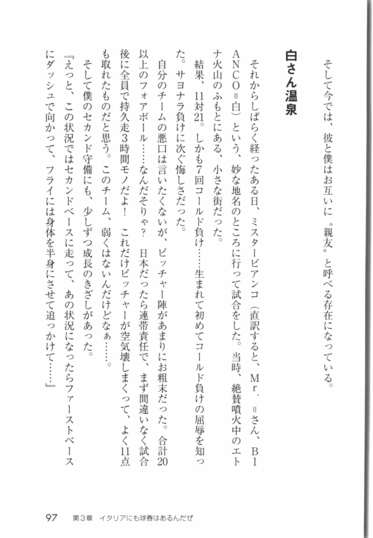
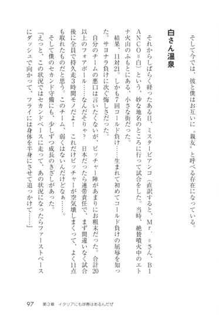
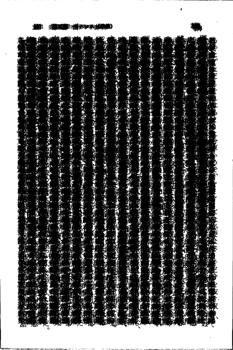
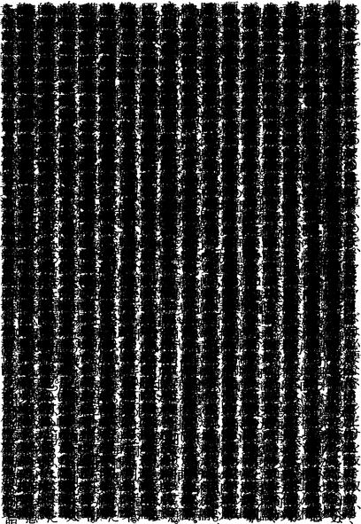

〜2014年8月中旬〜
printfだけでやってみようと思ったが、
やはり真ん中で1個にする処理がどうしてもうまいこといかない。
tr -s xでごまかした。
% for i in {1..11} {10..1};do printf "%*s%*s\n" $i x $[22-2*i] x|tr -s x;done
x x
x x
x x
x x
x x
x x
x x
x x
x x
x x
x
x x
x x
x x
x x
x x
x x
x x
x x
x x
x x
%.0sにすれば消えるが、むむ、待てよ。ああ、こうすればいいのか。
for i in {1..11} {10..1};do printf "%*s%*.*s\n" $i x $[j=22-2*i] $j x;done
x x
x x
x x
x x
x x
x x
x x
x x
x x
x x
x
x x
x x
x x
x x
x x
x x
x x
x x
x x
x x
これでbashでもzshでもokだ。とりあえず満足した。
pbmをxzで圧縮しても
% convert 100.pbm.xz foo.png convert.im6: no decode delegate for this image format `100.pbm.xz' @ error/constitute.c/ReadImage/544. convert.im6: no images defined `foo.png' @ error/convert.c/ConvertImageCommand/3044.
てな感じで怒られてしまう。が、ここにdelegateって書いてあるのがヒントで、
~/.magick/delegates.xmlで定義してやると使えるようになる。
% cat ~/.magick/delegates.xml <?xml version="1.0" encoding="UTF-8"?> <delegatemap> <delegate decode="xz" command="xzcat '%i' > '%o'"/> </delegatemap>
こんな感じで用意してやればok。
% convert 100.pbm.xz -verbose foo.png 100.pbm.xz=>foo.png XZ 1500x2363 1500x2363+0+0 8-bit PseudoClass 2c 65.5KB 0.120u 0:00.120
これはImageMagickのコマンド全部に有効で、identifyもokだしdisplayでも表示できるようになる。
% identify 100.pbm.xz 100.pbm.xz XZ 1500x2363 1500x2363+0+0 1-bit Bilevel DirectClass 444KB 0.000u 0:00.000
結構便利だ。
昨日の逆。同じように~/.magick/delegates.xmlで定義する。
<?xml version="1.0" encoding="UTF-8"?> <delegatemap> <delegate decode="xz" command="xzcat '%i' > '%o'"/> <delegate decode="pbm" encode="xz" command="xz -9 < '%i' > '%o'"/> </delegatemap>
こちら側はあまり自由がない。pbm決め打ちになってしまう。
pgm.xzも定義しようとして
<delegate decode="pgm" encode="xz" command="xz -9 < '%i' > '%o'"/>
をどこかに入れても先に書いたほうしか有効にならない。
これに関してはxz *.pgmと簡単に後から実行できるしあまり気にならない。
二値画像を保存するならpbm.xz形式が小さくてそこそこ速いし最適だと思う。
なにげなくGoogle日本語入力でzlと打ったらちゃんと→が出てきて驚いた。
SKK使ってるとつい打ってしまうわけだけど、気が利いてるな。
zh, zj, zl, zk, z-, z/, z[, z], z,, z.といろいろ使える。
1**2, 11**2, 111*2,...ってことだったんだねえ。
% for i in {1..9};a+=1&&printf %$[8+i]s\\n $[a**2]
1
121
12321
1234321
123454321
12345654321
1234567654321
123456787654321
12345678987654321
スキャンした画像は001.pbmのような連番で名前をつけてるが、
この名前から計算するときに001の0が邪魔になるときがある。
Bashだと8進数とみなされるので。
そこで先頭の0を取り除くわけだが、むりやり10進として扱う方法もある。
$ a=009 $ echo $[a+1] bash: 009: value too great for base (error token is "009") $ echo $[10#$a+1] 10
10#をつければ10進になる。10#aとしてしまうとaは変数じゃなくてリテラルになるので、
10#$aにする必要あり。
0を取り除くならshopt -s extglobすると簡単。
$ echo ${a##+(0)}
9
+(0)で0の1個以上の繰り返しを意味することになる。
?(pattern-list)
Matches zero or one occurrence of the given patterns
*(pattern-list)
Matches zero or more occurrences of the given patterns
+(pattern-list)
Matches one or more occurrences of the given patterns
@(pattern-list)
Matches one of the given patterns
!(pattern-list)
Matches anything except one of the given patterns
先日drawのcolorでfloodfillする技について触れたが、
これを利用すれば
黒い帯も消せるんじゃないかと思い実験。
drawだと二値化しないときついが、-floodfillオプションだと-fuzzでごまかせる。
というわけで、外側に1画素大きめのborderをgrayで書いて-floodfillで白く塗り潰す。
% convert black-belt.png -bordercolor gray -border 1x1 \ -fill white -fuzz 50% -floodfill +0+0 gray -shave 1x1 \ black-belt-floodfilled.png
こんな感じで右側の帯がきれいに消せた。
 
あれ、なんか色も濃くなってるけどなんでだ？まあいいか。むしろ好都合。
これは偶数奇数ページによって左右に出てくるので-chopや-cropで対処するのは面倒。
その点-floodfillだとどちらに出ててもというか上下にあっても問題なく除去できるはず。
pamtiltはconvert -deskewに比べると格段に速いが結果がいまいち。
pamtiltした結果でrotateした画像をもう一度pamtiltすれば0になるはずだが、
微妙にまだ傾いてるよという結果になったりする。
% pamtilt 020-90.pbm -0.46 % convert 020-90.pbm -rotate 0.46 pbm:- | pamtilt -0.30
とまあなんとも微妙な結果だ。その点convertのdeskewはちゃんと0になってくれる。
% ~/local/bin/convert 020-90.pbm -deskew 10% -format '%[deskew:angle]\n' info: 0.671404 % convert 020-90.pbm -rotate 0.671404 pbm:- | \ ~/local/bin/convert - -deskew 10% -format '%[deskew:angle]\n' info: -0
%[deskew:angle]が使えるのは最近のconvertなのでそこだけ~/local/binのを使ってる。
これもfloodfillを利用してるようだ。
最後に書いてあるスクリプトの概要を見ると、
縦横を格子状に分割してその各点を含む領域を求める感じかな。
これを応用してスキャンした画像のノンブルを除いた本文だけの領域が抜き出せないかな。
ただ、各文字はどう考えても分離しているのでいい感じで全部つなげないとだめだ。
やってみると確かに何文字かが抽出されただけだ。
ぼやけさせるにしても限度があるし。
1ページだと文字がばらばらになるが、
数十ページも重ねてやればかたまりになるはず。
とりあえずサイズでソートして真ん中の30個ほどで重ねてみた。
二値画像のほうがやりやすいのでpbmにしている。
% cat foo.sh
#! /bin/bash
N=30
for i in "{@-.}"; do
pages=($(ls -S "$i"/*))
n=$((${#pages[@]}/2))
mid=${pages[n]}
mid20=(${pages[@]:n-N/2:N})
convert "${pages[n-N/2-1]}" multiply.pbm
for j in "${mid20[@]}"; do
convert multiply.pbm $j -compose multiply -composite -verbose multiply.pbm
done
done
convert multiply.pbm -resize 30% multiply.png

これをmulticropにかけてみると、結構いい感じで本文だけ抜き出せた。
最下部の句読点を考えてちょっとマージンを大きめに設定すれば十分使えそうだ。
% multicrop -d 100 -u 3 multiply.pbm multicrop.pbm Processing Image 0 Size: 1360x1971 Page Geometry: 1574x2360+114+235 % convert multicrop-000.pbm -resize 30% multicrop.png

実際はXはどうでもよくて、Yだけあれば十分なので、
縦に分割してても問題ない。
あとはmulticropの中を読んで最低限必要な部分を抜き出せばokだな。